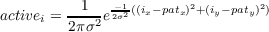

The basic architecture of a competitive learning system is a common one. It consists of a set of hierarchically layered units in which each layer connects, via excitatory connections, with the layer immediately above it, and has inhibitory connections to units in its own layer. In the most general case, each unit in a layer receives an input from each unit in the layer immediately below it and projects to each unit in the layer immediately above it. Moreover, within a layer, the units are broken into a set of inhibitory clusters in which all elements within a cluster inhibit all other elements in the cluster. Thus the elements within a cluster at one level compete with one another to respond to the pattern appearing on the layer below. The more strongly any particular unit responds to an incoming stimulus, the more it shuts down the other members of its cluster.
The region confines the data points to specific shapes. The variables all affect the main formula used to update the weights which is as follows.

j is an index from 0 to number of data selected at random.
distance[i]=weights[i]-data[j]
winning neuron is found by finding neuron with
minimum distance=mindist
index=mindistind
ri=index[mindistind]
newdist[i] = 1/(sqrt(2*piConst)*sigT).*exp( sum(( (index - ri, K,1)) .^2) ,2)/(-2*sigT)) * etaT
where sigT=sigma
etaT=learning rate
weights[i]=weights[i]+newdist[i]*(data[i]-weights[i])
At the end of each iteration,
sigT = sig0*exp(-i/tau1);
etaT = eta0*exp(-i/tau2);
For further information, refer this PDF